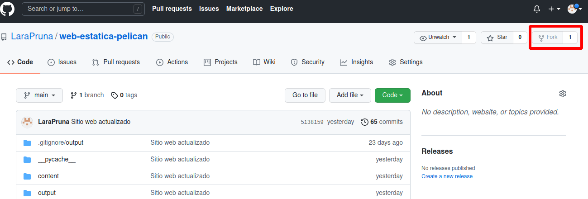
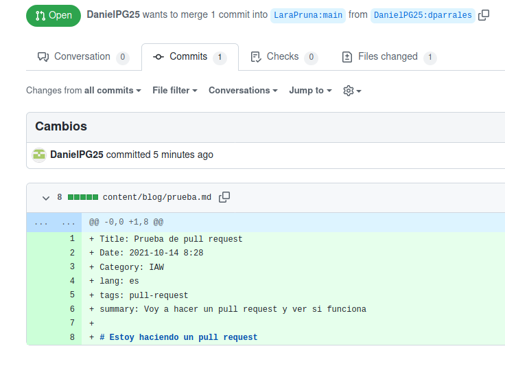
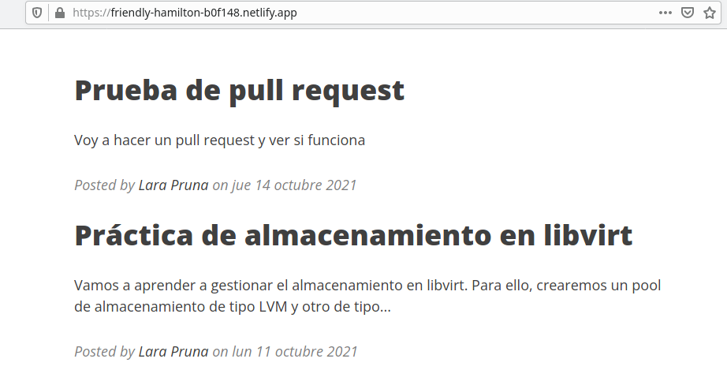

El Pull Request es una petición que se hace al propietario de un repositorio para realizar un cambio en el mismo. Si el propietario está de acuerdo, aceptará el cambio y actualizará el repositorio con la nueva versión.
En otras palabras, se trata de una colaboración.
Enviar el Pull Request
Antes de hacer el cambio
Estos son los pasos que tenemos que seguir antes de realizar el Pull Request:
Primero, creamos una rama (fork) pulsando en ese mismo botón en el repositorio.

Clonamos el repositorio (con ssh, para que nos pida la clave en lugar de la contraseña del usuario):
git clone git@github.com:LaraPruna/web-estatica-pelican.git
Creamos una rama nueva:
git checkout -b pr_lpt
 Ya podemos cambiar lo que queramos.
Ya podemos cambiar lo que queramos.
Después de hacer el cambio
Añadimos los cambios a la rama y los confirmamos:
git add .
git commit -m "He añadido un nuevo fichero"
Identificamos el nombre del repositorio remoto con el siguiente comando. En mi caso, es "origin".
git remote
Enviamos los cambios con git push, el repositorio remoto y el nombre de nuestra rama:
git push origin pr_lpt
Por último, creamos el Pull Request pulsando el botón que nos aparecerá en el repositorio:
Para sincronizar nuestra rama con el repositorio remoto, revisamos en qué rama estamos. La rama en la que nos encontramos se mostrará en verde.
git branch
Si no nos encontramos en nuestra rama principal (main o master), cambiamos a esta:
git checkout main
Añadimos el repositorio original como un repositorio upstream, si no lo tenemos ya:
git remote add upstream https://github.com/josedom24/prueba-pr-asir.git
Buscamos los cambios del repositorio original:
git fetch upstream
Fusionamos nuestra rama principal con el repositorio original:
git merge upstream/main
Mandamos los cambios a GitHub:
git push origin main
Y ya solo nos quedaría esperar que el propietario del repositorio...
...nos acepte el cambio.
Recibir el Pull Request
Cuando recibamos un Pull Request, nos aparecerá la propuesta en la pestaña "commit" de nuestro repositorio.
Me he servido de la ayuda de mi compi Daniel para hacer la prueba.
Aquí os muestro el resultado de su Pull Request:

Después, aceptamos el cambio...
 ... o lo rechazamos.
... o lo rechazamos.
Así queda el sitio web después de aceptar el Pull Request y actualizar el repositorio.
